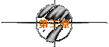
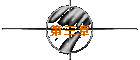
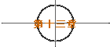
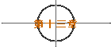

※第一次的亲密接触※
written by jht.

原来如此。
难怪阿泰每次和我们吃火锅时，都说菜很好吃，于是我们就会吃菜，
但他却一直夹肉...
《对女人而言...一年有五大节庆...即西洋情人节、中国情人节、她的生日
、三八妇女节、耶诞节。...我阿泰纵横情场近十载...大小数百战...
我敢骂女人三八...我敢放女人鸽子...我敢说女人脸蛋不够好看...
我敢嫌女人身材不够纤细...但我绝不敢在这五大节庆里...
不上贡一些礼品与花朵以表示忠贞不渝、绝无贰心...》
阿泰点起了烟，语重心长地说著...
《一年365天...你在其它360天对她很好...反而不及在这5天里让她觉得浪漫...
通常女孩们会因为你在这5天里表现良好...而忘了你在其它360天里
对她并不够在乎的事实...相反地...她们会因为你在这5天里并无特殊表现...
而拒绝相信你在其它360天里细心呵护她的事实...》
哇ㄌㄟ...阿泰的屁还没放完。
《就像一个棒球名人所说的...
「不要吹嘘你的打击率很高...不要强调你的安打数很多...
你只要告诉我...你的打点有多少？」...
痞子...懂了吗？...适时而带有打点的安打...才能给对手迎头痛击...》
我懂了...但我大错已经铸成...又该如何挽回呢？
《痞子...没关系...反正到时候我会再陪你喝酒的...
你有没有想过...正因为你常失恋...所以你的酒量锻练得非常好...
从这个角度想...你就不会太难过了...正所谓有所得必有所失...
这也是塞翁失马，焉知非福的真谛...》
话虽如此，但我这个塞翁，还有多少匹马可以丢掉呢？...
晚上在研究室，继续为著论文打拼..
说也奇怪，今晚看到那些熟悉的偏微分方程式，却一直觉得不顺眼..
用几条简单的偏微分方程式来解释自然界的物理现象，就叫科学...
那为什么用天上星宿的排列组合来解释人生，就会叫迷信呢？..
科学应该只是解释真理的一种方法，不能用科学解释的，未必不是真理..
为什么学科学的人，却往往掉入自己所擅长的逻辑的陷阱之中呢？..
那只讨厌的野猫，偏偏又在此时发出那种三长一短的叫声。
上线吧！..反正脑筋已经打结了..程式一定写不下去...
「痞子...终于看到你了...晚安ㄚ...:)..」
终于？这个形容词好奇怪。更奇怪的是，为什么这么晚了她还在线上？..
该不会又是心情不好吧!?..
『是ㄚ...你我相逢在黑夜的网路上...真是有缘...』
学学徐志摩，也许她会觉得我还是很浪漫的。
「痞子...跟缘份无关...因为我是刻意从两点多等到现在的...」
『真的假的？...没事干嘛等我？..』
「我想跟你聊天ㄚ！...不然我睡不著...」
『你得了被害妄想症吗？...非得在睡前受到一点惊吓才睡得著吗？..』
「：）...」
这次的笑脸符号是用全形字打的，看来笑得比较大声...
「痞子...继续中午的话题...那你觉得网路上的邂逅如何呢？...」
拜托...那壶不开提那壶...中午刚被阿泰训了一顿...现在怎敢再讲..
『网路上的邂逅....很...很...很浪漫ㄚ...』
我果然不擅于说谎，昧著良心时，连打出来的字也会抖...
「痞子...你骗人ㄛ...你又不是浪漫的人...」
完了...快要跟阿泰去喝酒了...
「痞子...说说看嘛！...我喜欢听你扯...」
『既然知道我是扯...何苦还要听我扯...』
「痞子...这叫知其不可为而为之...也叫明知山有虎，偏向虎山行...」
这家伙，别的不学，竟学我喜欢乱用成语。
看看马厩，我只剩下这匹马了。
该据实以告？还是含混带过？我不禁犹豫著...
「痞子...你当机了？...还是在发呆？..」
『嗯...我在思考今天的太阳为何如此之圆？..』
「痞子...别转移话题...我可是等了你一个钟头ㄛ..」
好厉害，连顾左右而言他，这种国民党高级官员才会的技巧也会被识破。
『现在很晚了...我怎忍心为了一己之私，让你听我大放厥词呢？..』
「痞子...拖延战术也没有用ㄛ...」
最后一张王牌也失效，看来只得屈打成招了。
其实网路上的邂逅，的确是很浪漫。
因为浪漫通常带点不真实，而网路并不真实。
所以由此观之，网路上的邂逅是具备浪漫的条件。
「痞子...网路为何不真实？...虚幻的应是人性而非网路，不是吗？..」
话虽如此，但网路由于有很安全的防护措施，所以通常会产生三种人。
第一种人会在网路上突显其次要性格。
一般人应该具有多重性格，而在日常生活处世中，所展现的为主要性格。
次要性格很可能被压抑，也很可能自己本身并未察觉有这种性格。
但在网路上，代表自己的，已不再是血肉之躯，而是一些英文字母。
少了所有的应酬与必要的应对进退，也少了很多利害关系。
于是猪羊变色，反而在刻意或不自觉的情况下，展现自己的次要性格。
「是这样吗？...那第二种人呢？..」
第二种人会在网路上变成他“希望”成为的那种人。
人性千奇百怪，一定会有某些性格是你特别欣赏与羡慕的。
但很可惜，这些性格未必为你所拥有。
于是你会很希望成为拥有这些性格的另一种人。
而网路正好提供这个机会，让你变成这种人。
举例而言，平常沉默寡言的，在网路上可能会风趣健谈。
而害羞文静的，则很容易变成活泼大方。
「痞子...你在盖吗？...那第三种人呢？..」
我没臭盖，这是我一个念台大心理研究所朋友的硕士论文。
第三种人会在网路上变成他“不可能”成为的那种人。
上帝是导演，它指定你必须扮演的角色，不管你喜不喜欢。
而网路上并没有上帝，因此所有角色皆由你自导自演。
于是你很可能在网路上扮演你日常生活中根本不可能扮演的角色。
举例而言，你若是女的，很可能会在网路上变成男人。反之亦然。
或者你已30岁，很可能会在网路上装成17岁的幼齿姑娘。反之亦然。
又或者你明明是恐龙，很可能会在网路上以绝代佳人自居。反之亦然。
「痞子...那你是属于那一种人？...而我呢？..」
我不愿意相信你是第三种人，因为我也不是第三种人。
而由于在网路上第一种人最多，所以你也不是第一种人。
因为你特别。
而让特别的你所欣赏的我，自然也有点特别。
所以我们都是第二种人。
「痞子...你很臭屁ㄛ...那如果我们都是第二种人...是好还是坏呢？..」
这不是好与坏的问题，而是应不应该的问题。
我们应该要成为第一种人，而不应该成为第二或第三种人。
「痞子...请继续放吧！...小女子洗鼻恭闻..」
第一种人最真实。
因为他所展现的，还是属于自己的性格。
而且换个角度想，他反而更能挖掘出自己潜在的优点。
例如有很多人在板上写文章后，才发觉自己有当作家的天份。
也有很多人在板上和人开骂后，才惊讶自己的脸皮厚度不输给立法委员。
于是从网路上得到成长。
第二种人最愚蠢。
因为他总是羡慕别人的优点，而忘了去欣赏自己本身的优点。
如果他是柠檬，就应该试著去喜欢酸味，而不是去羡慕水蜜桃的甜美。
因为水蜜桃也可能羡慕柠檬的酸。
「痞子...那么你我都是酸柠檬罗！..这样算不算同是天涯沦落人？..」
酸则酸矣，沦落则未必。
而且两个酸柠檬碰在一起，不也挺浪漫？
「痞子...别又假装浪漫ㄛ！..你果然是希望变成浪漫的第二种人..」
好厉害，这样也会被她抓包。看来她比我酸。
「痞子...My ears will go on...所以也请你go on..」
第三种人最可怜。
因为如果他必须变成另一种他不可能成为的人，才能得到乐趣。
那么无论他能不能得到乐趣，他都无法享受这种乐趣。
而且久而久之，便会得到所谓的“网路性精神分裂”。
他很容易将所有的人际关系与喜怒哀乐，建筑在网路上。
一旦离开了网路，便会无所适从。
「痞子...能不能告诉我..为什么你是第二种人？..」
其实也很简单。主要是因为我平凡。
我身材不高也不矮，长相不丑也不帅，个性不好也不坏。
虽然已习惯于平凡，但有时却不甘于平凡。
因此网路便成为我让自己不平凡的最佳工具。
「痞子...可是你刚说你有点特别的...不是吗？..」
平凡加上有点特别，所以是特别平凡。
所以我更希望成为另一种人。
「痞子...那你希望变成谁呢？..」
我当然希望像阿泰一样，浪漫而多情，风趣而健谈。
因为这是我所缺乏的。
「痞子...那我呢？..」
你？我不知道。
你想轻舞飞扬，希望尽情挥洒年轻，舞动青春。
但如果这只是你无法做到的希望，那么只有两种可能。
但如果这只是你无法做到的希望，那么只有两种可能。
一是你即将老去；二是你时日无多。
我想我讲错话了，因为她一直没再传送任何Message过来。
我不禁自责自己的变态，干嘛扯这些东西？
虽说这是我朋友的硕士论文，但他的口试并未通过。
所以一切都还只是停留在唬烂的阶段。
再等等吧！也许她当机了。
记得阿泰有次也是如此，那时他的网友送来一句：
《阿泰...我已经两个月了...》
阿泰大吃一惊，狼容失色。
他说他一直很小心的，不可能出问题。
难道是那种在超市买的买一送一，还附赠激情持久环的保险套出了问题？
幸好后来她又送来一句：
《Sorry...刚刚当机...我是说我已经两个月了...没看到你...我很想念你..》
所以我继续等著。
虽然只等了几分钟，但我觉得好像等了数小时之久。
我很想道歉，却不知从何说起。
直到她传来这句：
「痞子...伊莎贝尔...我们见面吧！..」
我毫不犹豫，轻轻地在键盘上敲下O、K两键。
下了线，天也已蒙蒙亮了。
上次跟她聊天，忘了吃中饭，可谓忘食。
这次跟她聊天，牺牲了睡眠，可谓废寝。
废寝与忘食兼而有之，那么我们应该可以算是有相当程度的熟识了吧!?
虽然已经决定要见面，但我们很有默契地不讨论细节。
更有默契的是，我们都会在深夜三点一刻上线，然后聊到天亮。
都聊些什么呢？
我也说不上来，反正到时都会有话说。
但一定不是风花雪月。
也不会是曾文惠是否抽过眼袋脂肪，或连战是否又踹了连方□几脚。
当然更不会是林志颖是否混过帮派，或陈进兴的入珠到底有几颗的八卦。
至于姓名，阿泰倒是交待我千万别问。
《因为问了姓名后...你就得记住...以后女友多了...很容易搞混..》
『那你怎么区分这些女孩子呢？..』
《情圣守则第一条...必须以相同的昵名称呼不同的女人...
因为你对一个女孩子感到兴趣的原因...不会是名字..
而且愈是漂亮的女孩子...愈容易被人问姓名..问久了她就会烦..
所以当你一直不问她名字时...她反而会主动告诉你..》
『她如果主动告诉你名字后...又该如何？..』
《Good Question...》
阿泰赞许似地拍拍我的肩膀，一付孺子可教也的模样。
《首先你得赞美她的名字...形容词可有四种：气质、特别、好听、亲切。
如果她的名字只可能在小说中出现，你要说她的名字很有气质..
如果她的名字像男生，或是很奇怪，你要说她的名字很特别..
如果她的名字实在是普普通通，乏善可陈，你要说她的名字很好听..
如果她的名字很通俗，到处可见，你要说她的名字很亲切..》
《然后你不用刻意去记...因为如果你很喜欢这女孩...你自然会记得...
你若不怎么喜欢...那么记了也没用...》
有点玄ㄋㄟ，听不太懂。
《痞子...因为女孩子若打电话给你...很喜欢让你猜猜她是谁？..
一方面是好玩...另一方面也想测试你是否还有别的女人..
万一你猜错...或根本忘了她是谁...那怎么办？..
所以你一律称呼她们为“宝宝”或“贝贝”就对了..
这就叫做“以不变应万变”..》
阿泰拿出一本他所谓的“罹难者手册”，里面记载著被他征服过的女孩。
《痞子...你看看...这里面的女孩子都没有姓名...
基本上我是用身高体重三围和生日来加以编号，并依个性分为五大类：
“B”为泼辣，“C”为冷酷，“H”为热情，“N”为天真，“T”为温柔..
备注栏写上初吻发生的时间、地点...还有我挨了几个巴掌..
以及当时的天候状况..和她的穿著与口红的颜色..》
太夸张了吧！..这样也能混？..
《痞子...所以我说你道行太浅...天底下绝对没有一个女孩子会相信
你能记得初吻的细节...却忘了她姓名的荒诞事..
即使你此时不小心叫错她的名字...她也会认为你在开玩笑..
于是会轻轻打一下你的肩膀...然后说“你好坏”..》
《痞子...千万要记得...大丈夫能屈能伸...这一下你一定要挨..
然后要说：“对..我实在是很坏”...最好再加上一句：“我是说真的”..
女孩子很奇怪..你明明已经承认你很坏了..她反而会觉得你很善良有趣。
过了这关后..你就不会有良心上的谴责了..》
是吗？为什么呢？
《你已经告诉她实话..又说明了你的危险性..她若要飞蛾扑火也只好由她..
姜太公都已经不怎么想钓鱼了..鱼儿还是硬要上钩..你能有什么办法..?
阿泰说完，双手一摊，一付无可奈何的样子。
《痞子...你不要以为我很随便..所谓盗亦有道..我其实是很有原则的..
我的原则是不到最后关头，绝不轻易欺骗女孩子..》
我听你在放Ｘ，你若有原则，那宫雪花就会是纯情少女了。
《痞子...我再举例来说明我的原则..女孩子常喜欢问我一些问题..
其中最棘手与最麻烦的问题就是：
“你是不是还有别的女朋友？..以及你以前到底交往过多少女朋友？”..》
没错，这两个问题对阿泰而言，都是致命伤。
我不相信他能安全下庄而不撒谎。
《第一个问题的答案很简单..我当然老实说我还有其他的女朋友..
而她们的名字都叫“贝贝”..因为我一直称呼我的女友们为“贝贝”.
但问我问题的女孩子，会以为我都是在说她..
于是通常会带点歉意对我说：“对不起，我误会你了”...》
这么好混？我不太相信ㄋㄟ。
《当然有一些比较难缠的女孩子..仍然会不太相信..
这时我就会发誓..而且愈毒愈好..因为我是说实话，也不怕遭报应..》
《至于第二个问题就比较高难度了..我会告诉她：“你先说”..
如果她不说，皆大欢喜。如果她说了，我就会说：
“既然你已说给我，何苦还要听我说”..有时幸运点，可以混过去。
万一她又追问“Why？”..我会回答：“听到你过去的情史，
使得爱你的我内心多了一份嫉妒，也多了一份痛苦。
我不愿同样的嫉妒与痛苦，加诸在我爱的女孩身上”。..
这时应该已经混过去，但如果她就是要我说，我只好说：
“好..我招了..我一直以为在我的生命中，出现了XX个女孩。
但直到遇见你，我才发现这些女孩根本不曾存在过”...》
『阿泰...你这样不会太滥情吗？..』
《非也非也...我这样叫多情..》
『多情和滥情还不都是一样...』
《痞子...这怎会一样？..差一个字就不是纯洁了喔！..
多情与滥情虽然都有个情字，但差别在“多”与“滥”..
“多”也者，丰富充足也。“滥”也者，浪费乱用也。
多未必会滥，滥也未必一定要多。
就像有钱人未必爱乱花钱，而爱乱花钱的也未必是有钱人。
但大家都觉得有钱人一定爱乱花钱。其实有钱人只是有很多钱可花而已。
有没有钱是能力问题，但乱不乱花却是个性问题。..
所以由此观之，我算是一个很吝啬的有钱人..》
开什么玩笑？如果阿泰这样叫吝啬，那我叫啥？
《痞子...你当然比我吝啬...不过那是因为你根本没钱可花的缘故..》
shit！阿泰又藉机损我一顿。
《痞子...其实对女孩子真正危险的，不是像我这种吝啬的有钱人..
而是明明没钱却到处乱花钱并假装很有钱的人..》
阿泰如果还不危险，那我就是国家安全局的局长了。
《好了...今天的机会教育就到此...我现在要去赴C-163-47-33-23-32的约..
总之..你别问她的名字..“不听情圣言，失恋在眼前”..懂吗？..痞子..》
阿泰唱著“我现在要出征”，然后离开了研究室。
看在阿泰这么苦口婆心的面子上，我只好听他的劝。
因此我一直不知道轻舞飞扬的芳名。
而她也是一样，并不问我的名字。
难道也有个女阿泰？我常常这么纳闷著。
深夜三点一刻已到，又该上工了。
「痞子...晚安...:)...今天过得好吗？..」
其实我的生活是很机械而单纯的，
所以我对生活的要求是：“不求有功，但求无过”，
只要没发生什么倒霉事，那就是很幸运了。
「痞子...那你今天倒霉吗？..」
『今天还好，前几天气候不稳定，染上点风寒..』
「痞子...那你好点了吗？..我很关心的ㄛ！..」
『早就好了...除了还有点头痛发烧咳嗽流鼻水喉咙痛和上吐下泻外..』
「痞子...你真的很痞ㄋㄟ...你到底好了没？..」
『只要能看到你，自然会不药而愈..』
「：）...」
又是这种全形字的笑脸符号。
这家伙，我鼓起勇气暗示她该讨论见面的细节了，她竟然无动于衷。
『那你今天过得好吗？..美丽的轻舞飞扬小姐..』
轮到我发问了，在网路上聊天时，不能只处于挨打的角色。
而且我觉得今晚的她，有点奇怪。
「痞子...其实跟你聊天是我一天中最快乐的时间..」
她没头没脑地送来这句，我的呼吸突然间变得急促了起来...
是紧张吗？好像不是。跟她在一起，只有自然，没有紧张。
应该算是有点感动吧！
我总算是对得起那些因为半夜跟她聊天而长出的痘子们。
「痞子...所以我很怕见了面后，我们就不会在这么深的夜里聊天..」
『姑娘何出此言？..』
「痞子...你很笨ㄋㄟ...那表示我长得不可爱...怕你失望而见光死..」
『那有什么关系？..反正我长得也不帅..』
「痞子..那不一样..你没听过“郎才女貌”吗？..你有才我当然也得有貌..」
『我又有什么狗屁才情了？..你不要再混了..见面再说..』
「痞子..你讲话有点粗鲁ㄛ..我好歹也是个淑女ㄋㄟ..虽然是没貌的淑女..」
『狗屁怎会粗鲁？..粗的应该是狗的那只...腿吧！..狗屁只是臭而已..』
「痞子..你讲话好像跟一般正常人不太一样ㄛ...我真是遇人不“俗”..」
『干嘛还好像...我本来就不正常..』
「痞子..再给我一个见你面的理由吧！..」
『那还不简单..你因为不可爱所以没有美貌..我则因讲话粗鲁所以没有礼貌..
“同是天涯没貌人...相逢何必太龟毛”...所以非见面不可..』
「痞子..好吧！..你挑个时间...：）..」
『拣日不如撞日...就是今晚七点半..地点轮你挑..』
「大学路麦当劳..那里比较亮..你才不会被吓到..」
『OK..但你要先吃完饭..我不想人财两失..』
「痞子..你真的是欠骂ㄛ...」
『我怎么认你？...你千万不要叫我拿一朵玫瑰花当作信物..』
拿朵花等个未曾谋面的人，那实在是一大蠢事。
而且很容易被放鸽子。
不然张学友干嘛要唱：“我等到花儿也谢了”？
「我穿咖啡色休闲鞋，咖啡色袜子，咖啡色小喇叭裤，咖啡色毛线衣，
再背个咖啡色的背包..」
这么狠！输人不输阵，我也不甘示弱：
『我穿蓝色运动鞋，蓝色袜子，蓝色牛仔裤，蓝色长袖衬衫，
再背个蓝色的书包..』
除了蓝色书包得向学弟借外，其它的装备倒是没有问题。
「痞子..你还是输了ㄛ..我头发也挑染成咖啡色的ㄋㄟ..」
『你既然“挑染”..那我只好也“挑蓝”色的内裤来穿..』
「痞子..你少无聊了..输了就要认..」
我怎么可能会输？
我真的有一套彩虹系列的内裤，红澄黄绿蓝靛紫，七色俱全。
因为我是典型的闷骚天蝎座，外表朴素，内在却艳丽得很。
而且如果不小心忘了今天是星期几时，看一下内裤就知道了。
「痞子..你先去收惊一下..待会见罗！..」
『我会的..那你是否也该去收惊呢？..』
「痞子..我倒是不用..因为我本来就对你的长相不抱任何期望..」
horse's！临走时还要将我一军。
「痞子..我得早点睡..不然睡眠不足会让我看起来很恐怖..」
『你放心好了..如果你看起来很恐怖，那绝对不是睡眠不足的缘故..』
大丈夫有仇必报，所以我也回将她一军。
「痞子..那我先睡罗！..你也早点睡..:)..」
『好ㄚ！..我们一起睡吧！..』
待续
| 


 
 


 
